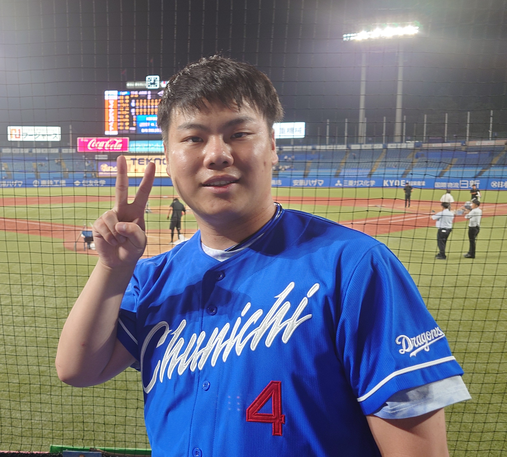
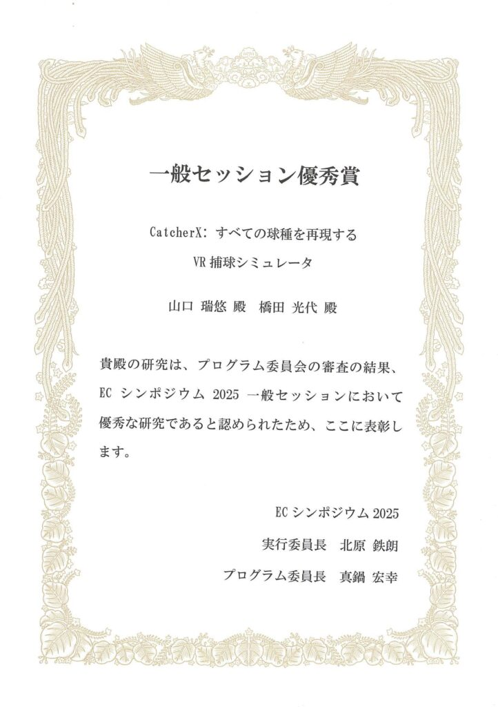
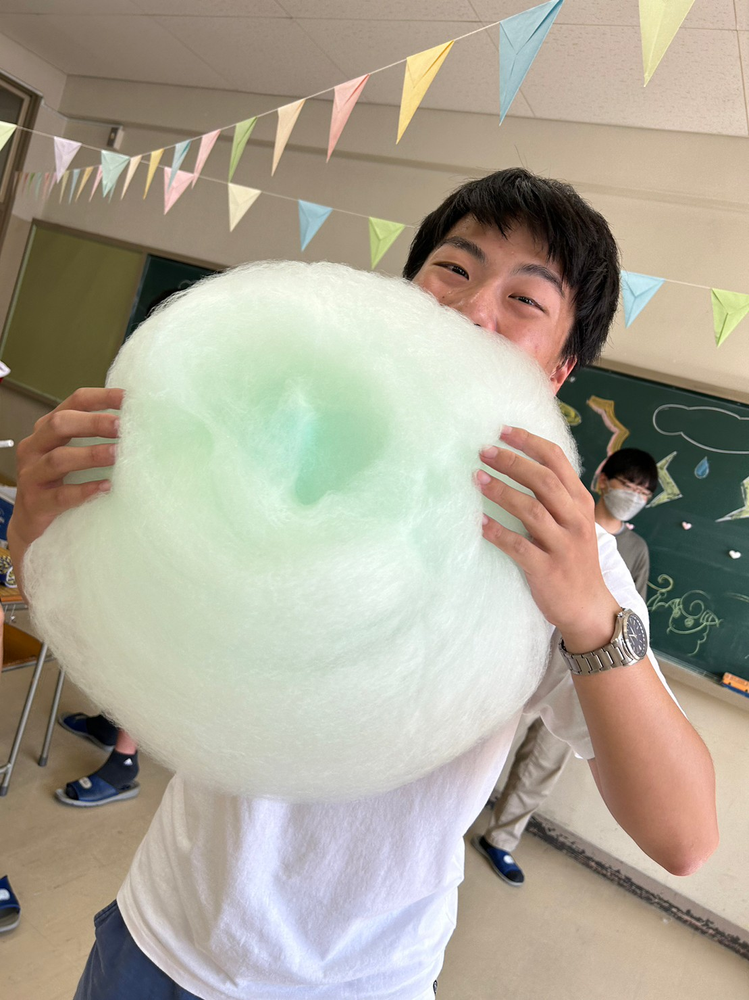
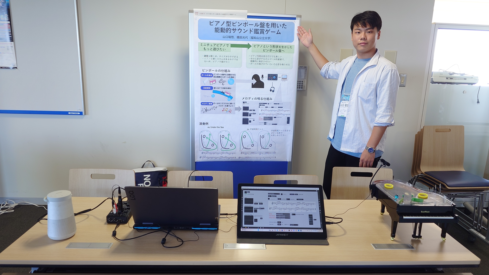
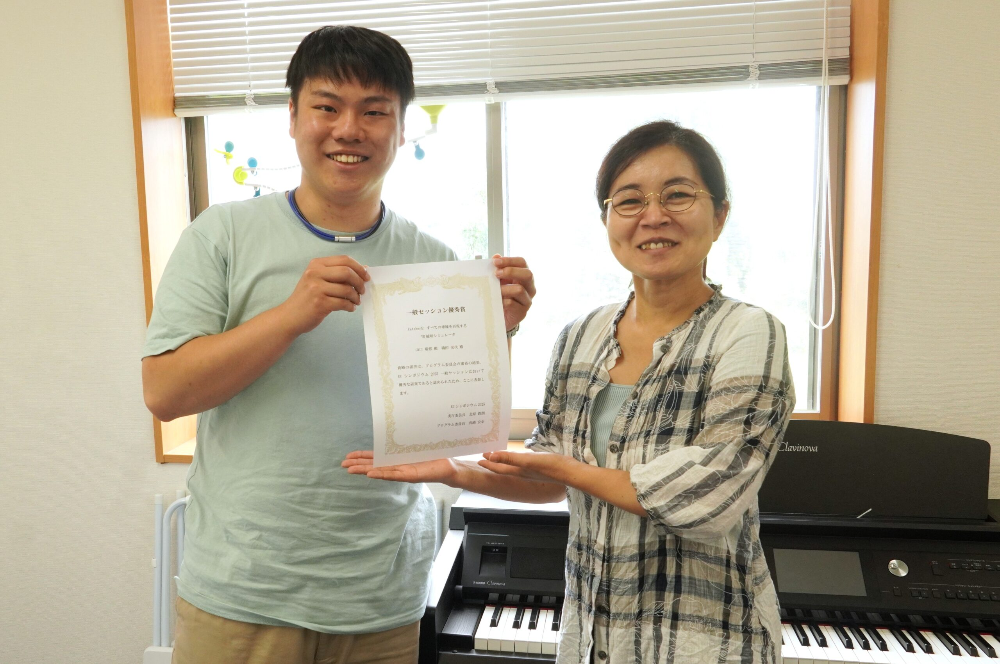

プロフィール

2005年8月30日，三重県鈴鹿市生まれ．三重県立津高等学校時代に培った感性を原点に，現在は「技術がいかに人の心を動かすか」というエンタテインメントコンピューティングの可能性を探求しています．音楽情報処理への興味から始まった私の旅は，VR技術を用いた身体的かつ没入感のある体験創出へとその領域を拡張させています．
福知山公立大学 橋田光代研究室および関西学院大学 片寄晴弘研究室にて，HIF（Human Information Framework）に基づくインタラクティブシステムの研究開発に従事．特にVRを用いた野球捕球シミュレータ「CatcherX」の開発など，デジタルとフィジカルの境界を溶かすような，次世代のエンタテインメント体験のデザインに情熱を注いでいます．
経歴
- 2024年3月 三重県立津高等学校 卒業
- 2024年4月 福知山公立大学情報学部 情報学科 入学 同時に橋田光代研究室配属
- 2024年9月 関西学院大学工学部 情報工学課程 片寄晴弘研究室外部研究員
発表論文
- CatcherX: すべての球種を再現するVR捕球シミュレータ（EC2025＠日本大学文理学部キャンパス）
- ピアノ型ピンボール版を用いた能動的サウンド鑑賞ゲーム（EC2024＠北海道情報大学）
受賞歴
一般セッション優秀賞
CatcherX: すべての球種を再現するVR捕球シミュレータ（EC2025＠日本大学文理学部キャンパス）

過去の学会発表
- 2025年8月 EC2025＠日本大学文理学部百周年記念館
CatcherX: すべての球種を再現するVR捕球シミュレータ（一般口頭・デモ発表） - 2024年9月 EC2024＠北海道情報大学
ピアノ型ピンボール版を用いた能動的サウンド鑑賞ゲーム（デモ発表） - 2024年8月 SIGMUS141＠駒澤大学
ピアノ型ピンボール版を用いた能動的サウンド鑑賞ゲームの試作（デモ発表）

過去の対外発表
- 2025年12月 関西学院大学工学部情報工学課程片寄晴弘研究室主催2025年度冬季中間発表
Catcher τείχος β: ボールを後ろに逸らさないVR捕球シミュレータの開発 - 2025年8月 関西学院大学工学部情報工学課程片寄晴弘研究室主催2025年度夏季中間発表
CatcherX: すべての球種を再現するVR捕球シミュレータ - 2024年12月 関西学院大学工学部情報工学課程片寄晴弘研究室主催2024年度冬季中間発表
Marvelica: 演奏表現可能なマーブルアニメーション - 2024年8月 関西学院大学工学部情報工学課程片寄晴弘研究室主催2024年度夏季中間発表
ピアノ型ピンボール版を用いた能動的サウンド鑑賞ゲーム

SNS
ギャラリー


